Sensitivity analysis is a fundamental tool in uncertainty quantification that helps us understand how changes in model parameters affect model outputs. This project explores both local and global sensitivity analysis methods applied to physical and biological systems.
Local sensitivity analysis examines the effect of small perturbations around a nominal parameter value. Global sensitivity analysis, in contrast, explores the entire parameter space to understand how uncertainty in inputs propagates to outputs.
We consider a simple spring model where the displacement depends on physical parameters. The goal is to compute the sensitivity of the displacement with respect to model parameters using three approaches:
For a function f(q), the finite difference approximation of the derivative is:
df/dq ≈ [f(q + h) - f(q)] / hThe complex step method uses:
df/dq ≈ Im[f(q + ih)] / hwhere i is the imaginary unit. This method achieves machine precision accuracy without subtractive cancellation errors.
The figure below shows the comparison of all three methods:
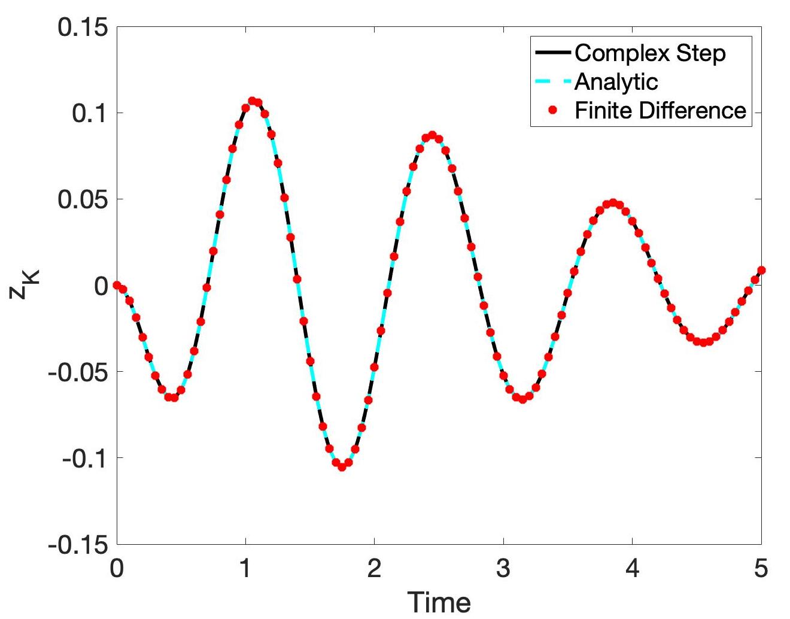
The complex step method matches the analytical solution to machine precision, while finite differences show truncation errors for small step sizes and round-off errors for very small step sizes.
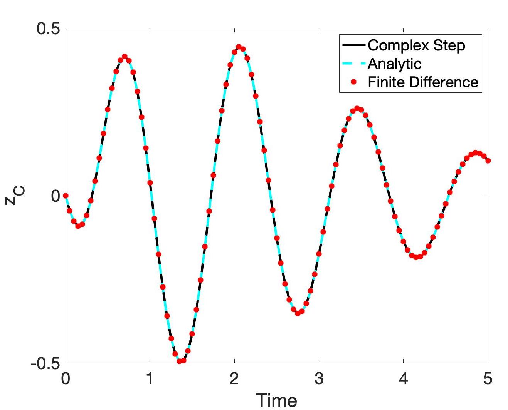
The SIR (Susceptible-Infected-Recovered) model describes the spread of infectious diseases. The model equations are:
dS/dt = delta*(N - S) - gamma*I*S
dI/dt = gamma*I*S - (r + delta)*I
dR/dt = r*I - delta*Rwhere: - S, I, R are susceptible, infected, and recovered populations - gamma is the infection rate - delta is the birth/death rate - r is the recovery rate - N is the total population
We compute sensitivities of the infected population with respect to each parameter using the complex step method. The sensitivity equations are solved alongside the state equations.
The Fisher Information Matrix (FIM) is computed as:
F = (1/sigma^2) * X^T * Xwhere X is the sensitivity matrix. The covariance matrix of the estimated parameters is approximately:
V ≈ sigma^2 * (X^T * X)^(-1)Parameters are identifiable if the FIM is well-conditioned (all eigenvalues are bounded away from zero).
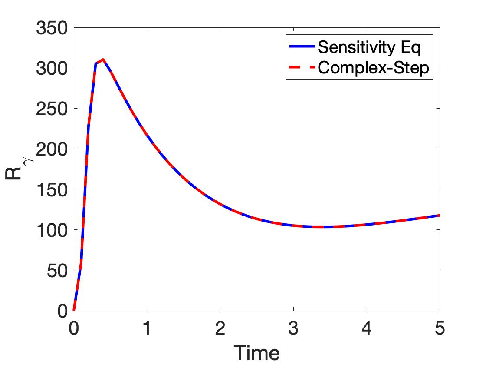
The sensitivity plots show how each parameter influences the infected population over time.
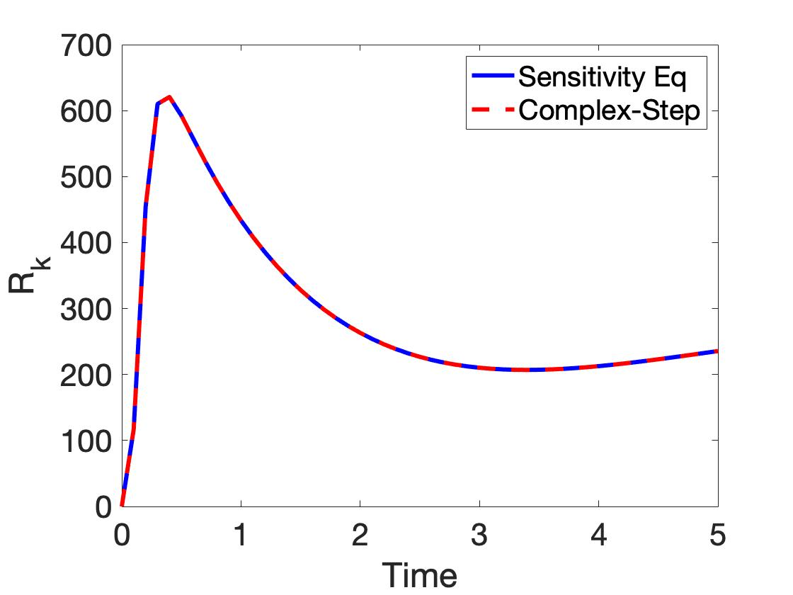
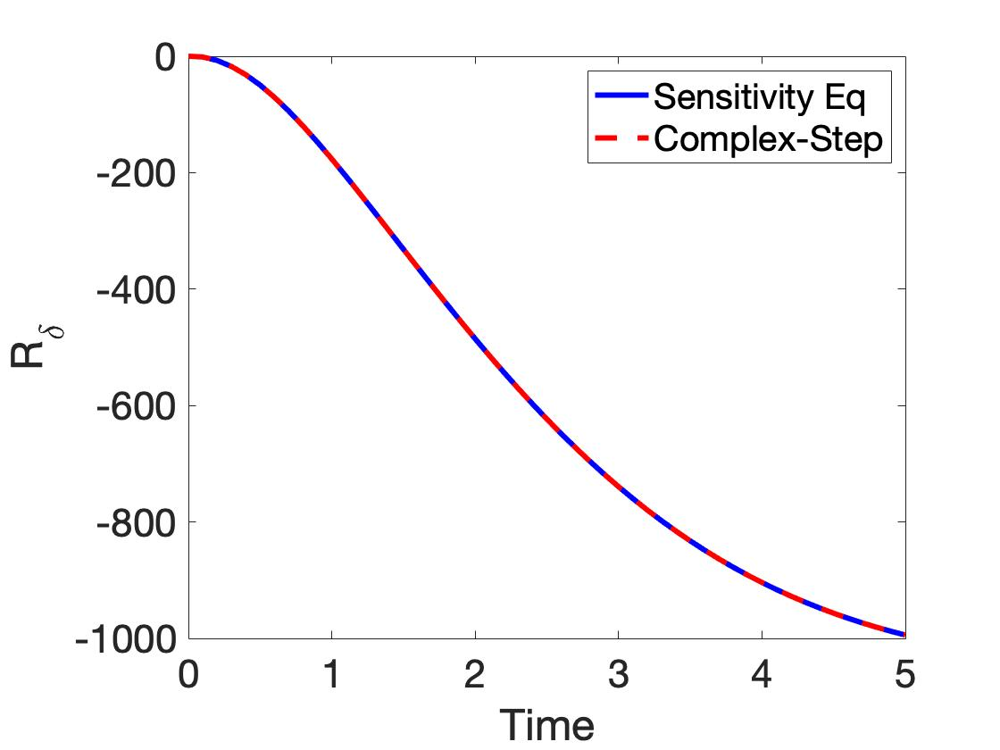
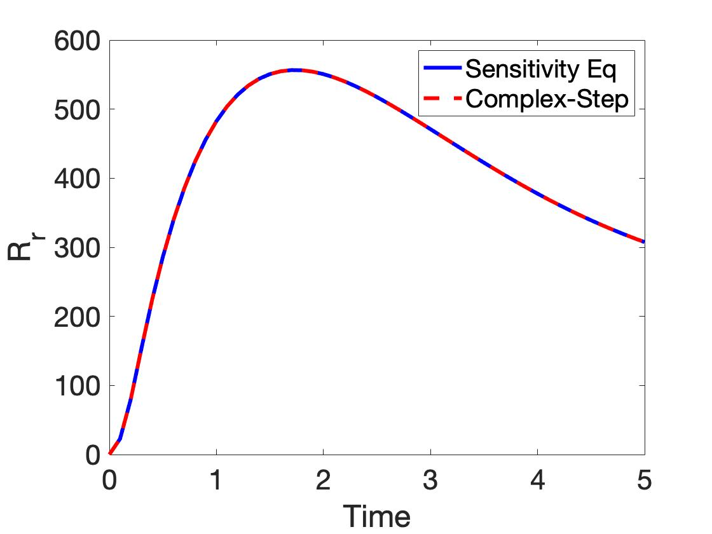
We analyze a heat conduction problem in a rod with convective boundary conditions. The steady-state temperature distribution depends on thermal conductivity and convection coefficients.
The steady-state heat equation is:
d/dx(k * dT/dx) = 0with boundary conditions involving convective heat transfer.
We compute the sensitivity of temperature with respect to model parameters and construct the Fisher Information Matrix to assess parameter identifiability.
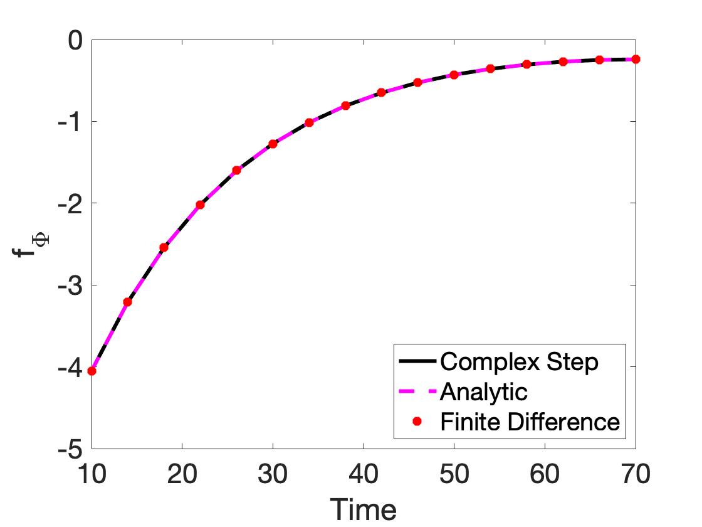
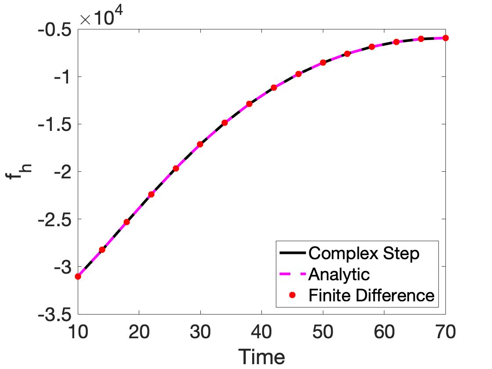
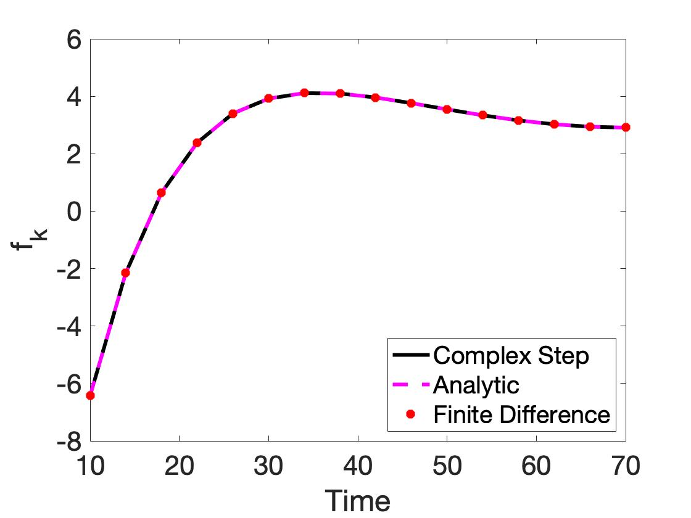
Global sensitivity analysis methods explore the entire parameter space rather than just local perturbations. We apply two methods:
The Morris method computes elementary effects by taking one-at-a-time perturbations at random points in the parameter space. For each parameter, we compute:
Sobol indices decompose the output variance into contributions from individual parameters and their interactions:
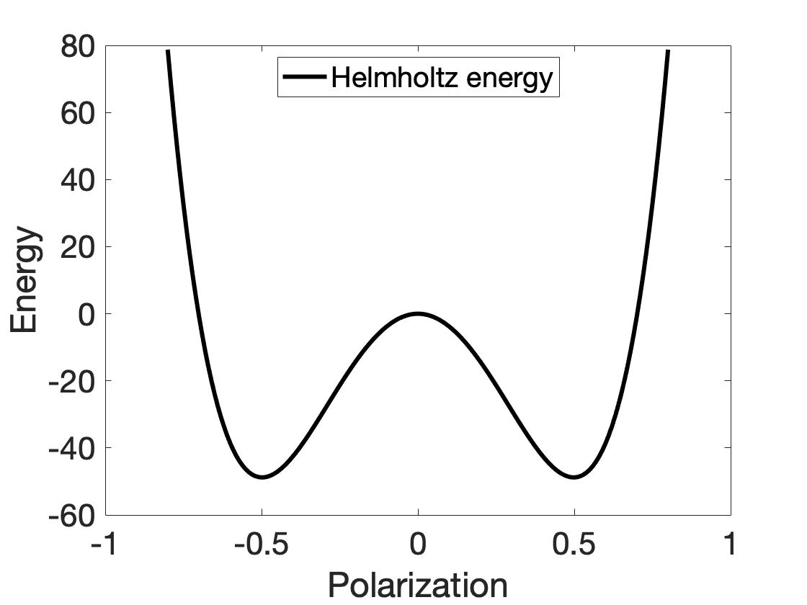
Parameters with high mean absolute effect are important. Parameters with high standard deviation show strong interactions or nonlinear effects.
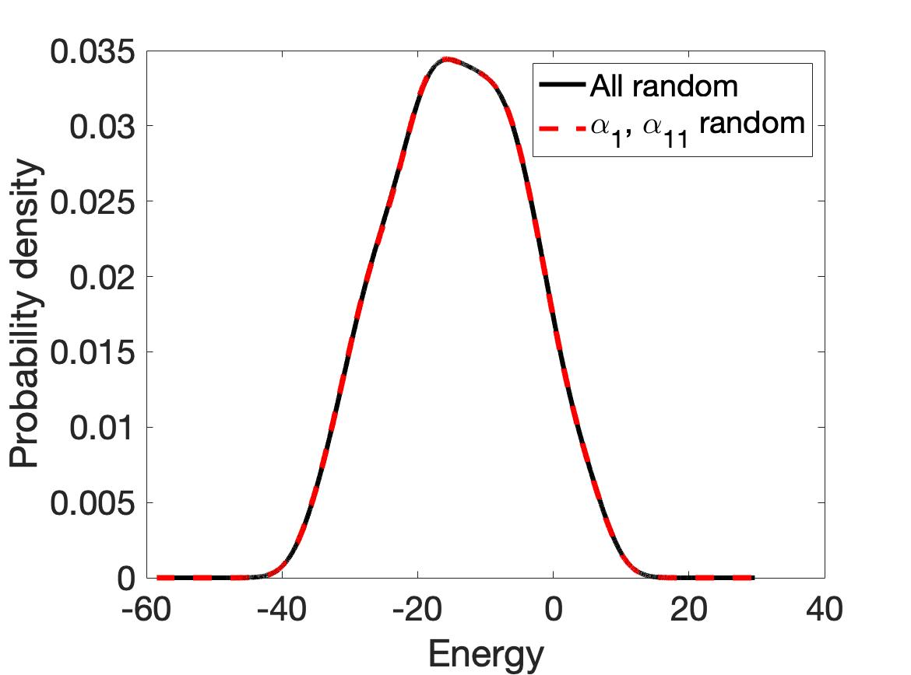
The Sobol indices quantify the relative importance of each parameter in explaining output variance.
This project demonstrated several key concepts in sensitivity analysis:
The complex step method provides machine-precision derivatives without the truncation-roundoff tradeoff of finite differences.
Local sensitivity analysis reveals how parameters influence model outputs near nominal values.
The Fisher Information Matrix connects sensitivities to parameter identifiability and estimation uncertainty.
Global methods like Morris screening and Sobol indices provide complementary information about parameter importance across the entire feasible range.
| File | Description |
|---|---|
| UQ_8_5.m / UQ_8_5.py | Spring model sensitivities |
| UQ_8_8.m / UQ_8_8.py | SIR model analysis |
| UQ_8_9.m / UQ_8_9.py | Heat equation identifiability |
| UQ_9_6.m / UQ_9_6.py | Global sensitivity analysis |